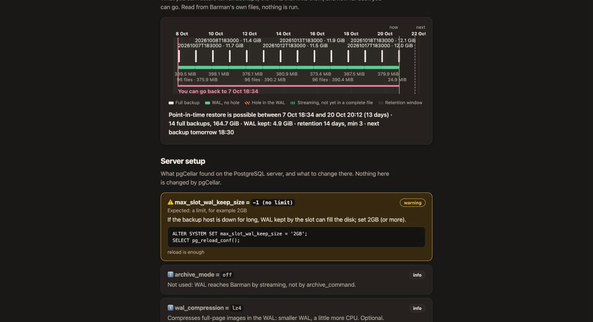

Preparing a PostgreSQL server
pgCellar never changes your PostgreSQL server. You prepare it once, with the commands in this chapter, and the Server setup section of the server page checks that you did it right and keeps checking. Every command below is the one pgCellar prints in its own fix column, so you can also copy it from the console.

Two roles
Barman uses two connections, so it uses two roles.
| Role | Used for | Needs |
|---|---|---|
barman |
Checks, metadata, starting and stopping a backup, switching WAL | LOGIN, the grants below |
streaming_barman |
pg_basebackup and the WAL stream |
LOGIN REPLICATION |
You can use other names. The names go in the two connection strings of the server (chapter 4).
On PostgreSQL 15 and later, as a superuser:
CREATE ROLE barman LOGIN PASSWORD '...';
CREATE ROLE streaming_barman LOGIN REPLICATION PASSWORD '...';
GRANT pg_read_all_settings, pg_read_all_stats, pg_checkpoint TO barman;
GRANT EXECUTE ON FUNCTION pg_backup_start(text, boolean) TO barman;
GRANT EXECUTE ON FUNCTION pg_backup_stop(boolean) TO barman;
GRANT EXECUTE ON FUNCTION pg_switch_wal() TO barman;
GRANT EXECUTE ON FUNCTION pg_create_restore_point(text) TO barman;
In psql, use \password barman instead of typing the password in the statement, so it does not land in your shell history or the server log.
On PostgreSQL 13 and 14 the predefined role pg_checkpoint does not exist and the backup functions have other names. Grant pg_monitor instead, and:
GRANT pg_monitor TO barman;
GRANT EXECUTE ON FUNCTION pg_start_backup(text, boolean, boolean) TO barman;
GRANT EXECUTE ON FUNCTION pg_stop_backup() TO barman;
GRANT EXECUTE ON FUNCTION pg_stop_backup(boolean, boolean) TO barman;
GRANT EXECUTE ON FUNCTION pg_switch_wal() TO barman;
GRANT EXECUTE ON FUNCTION pg_create_restore_point(text) TO barman;
A superuser also works for barman. It is simpler and it is more power than the job needs; prefer the grants.
The role must be allowed to read archive_command. pg_read_all_settings (or pg_monitor) does that. Without it PostgreSQL answers <insufficient privilege> and pgCellar shows an info line asking you to grant the role.
pg_hba.conf
all does not match replication connections, so the replication role needs a line of its own with the word replication as database:
host all barman 10.0.0.5/32 scram-sha-256
host replication streaming_barman 10.0.0.5/32 scram-sha-256
Replace the address with the one PostgreSQL sees. If a proxy or a relay sits between pgCellar and PostgreSQL, it is the proxy's address, not the address of the pgCellar host. When in doubt, try to connect and read the PostgreSQL log: the refusal names the exact address (no pg_hba.conf entry for host "172.27.0.4", user "barman").
Put the lines before any broader rule that would match first (a trust line, for example), then reload:
SELECT pg_reload_conf();
Check how PostgreSQL parsed them:
SELECT line_number, type, database, user_name, address, auth_method, error
FROM pg_hba_file_rules
WHERE 'barman' = ANY (user_name) OR 'streaming_barman' = ANY (user_name);
The error column must be empty.
Passwords: ~/.pgpass
pgCellar and Barman read passwords from ~/.pgpass of the barman user (/var/lib/barman/.pgpass in the image), mode 0600, one line per connection:
pg-main.example.com:5432:*:barman:THE_BARMAN_PASSWORD
pg-main.example.com:5432:*:streaming_barman:THE_STREAMING_PASSWORD
pgCellar drops any password= from a connection string before it runs psql, and never puts a password on a command line. Put the password in .pgpass and not in the connection string.
The settings Server setup checks
pgCellar reads these settings with one read-only query on pg_settings, through psql, using the conninfo of the server. The first read happens after the first status refresh; then every setup_interval (30 minutes by default), and again each time you press Run check now.
A check is ok, info, warning or error. An error means Barman will fail or a backup cannot be trusted, and it turns the server red or orange in Status. A warning is advice and never changes the colour of a server.
| Setting | Wants | Level when wrong | Needs |
|---|---|---|---|
wal_level |
replica or logical |
error | restart |
max_wal_senders |
2 or more | error | restart |
max_replication_slots |
1 or more when the server has a slot_name |
error | restart |
archive_mode |
on or always, only when WAL goes by archive_command |
error | restart |
archive_command |
barman-wal-archive ..., only when WAL goes by archive_command |
error | reload |
archive_timeout |
more than 0, for example 1h |
warning | reload |
max_slot_wal_keep_size |
not -1 when a slot is used, for example 2GB |
warning | reload |
full_page_writes |
on |
error | reload |
data_checksums |
on |
warning | not a setting, see below |
| client tools version | pg_basebackup at least as recent as the server |
error | image change |
wal_compression, summarize_wal |
information only | info |
Settings that do not exist in the version of your server are skipped.
Three more lines come from barman check, without any new query: Streaming access, Role privileges and Replication slot. When streaming access fails, the fix shows the pg_hba.conf line to add, with your streaming user in it. For servers using archive_command, Barman's own verdicts on wal_archive, archive_command and archive_mode are shown too.
If pgCellar cannot read the settings at all (no network, no password in .pgpass), the section shows one error line: "Could not read the server settings", with the reason. That line does not change the health of the server, because Barman's own checks already tell you whether the server is reachable.
The fixes, one by one
Each fix is plain SQL. A parameter that needs a restart says so; apply it in a maintenance window.
wal_level (restart):
ALTER SYSTEM SET wal_level = 'replica';
max_wal_senders (restart). Barman streams WAL over one connection and takes the base backup over another:
ALTER SYSTEM SET max_wal_senders = 10;
max_replication_slots (restart):
ALTER SYSTEM SET max_replication_slots = 10;
archive_mode (restart), when WAL goes by archive_command:
ALTER SYSTEM SET archive_mode = 'on';
archive_command (reload). The command comes from the ssh_host and ssh_port of pgcellar.yaml and the name of the server:
ALTER SYSTEM SET archive_command = 'barman-wal-archive --port 2222 backup.example.com pg-main %p';
SELECT pg_reload_conf();
barman-wal-archive comes from the barman-cli package on the PostgreSQL host. The postgres user must have an SSH key that pgCellar has authorised (chapter 4). pgCellar cannot test this command from its side. The proof is to press Switch WAL on the server page and look at the WAL archive check.
archive_timeout (reload). On a quiet database a 16 MB file fills rarely, so the recovery point can be hours old. Closing a file at least once an hour bounds it:
ALTER SYSTEM SET archive_timeout = '1h';
SELECT pg_reload_conf();
max_slot_wal_keep_size (reload). If the backup host is down for long, the slot holds WAL and the PostgreSQL disk can fill. Cap it:
ALTER SYSTEM SET max_slot_wal_keep_size = '2GB';
SELECT pg_reload_conf();
Choose a value larger than the WAL your server writes during the longest outage you want to survive. If the cap is hit, PostgreSQL invalidates the slot and Barman loses the chain: you take a new backup. That is a better failure than a full production disk.
full_page_writes (reload). It should never be off for a server you back up:
ALTER SYSTEM SET full_page_writes = on;
SELECT pg_reload_conf();
data_checksums. This is not a parameter. Enable it when the cluster is created (initdb --data-checksums), or on a stopped cluster:
pg_checksums --enable -D /var/lib/postgresql/16/main
then start PostgreSQL again. Without checksums a damaged data page goes unnoticed, in the backup as well, and a restore drill cannot tell. The check is a warning, and a very good idea.
Client tools version. pg_basebackup must be at least as recent as the server. The image ships the PostgreSQL 18 client, which talks to 13 through 18. If you replace the client, point path_prefix in the server file to the directory with the right binaries.
Quick manual test
From the pgCellar host, before you add the server:
docker compose exec pgcellar psql "host=pg-main.example.com user=barman dbname=postgres" -c "select 1"
docker compose exec pgcellar psql "host=pg-main.example.com user=streaming_barman dbname=postgres replication=true" -c "IDENTIFY_SYSTEM"
Both must answer without asking for a password. If they do, add the server in the console.